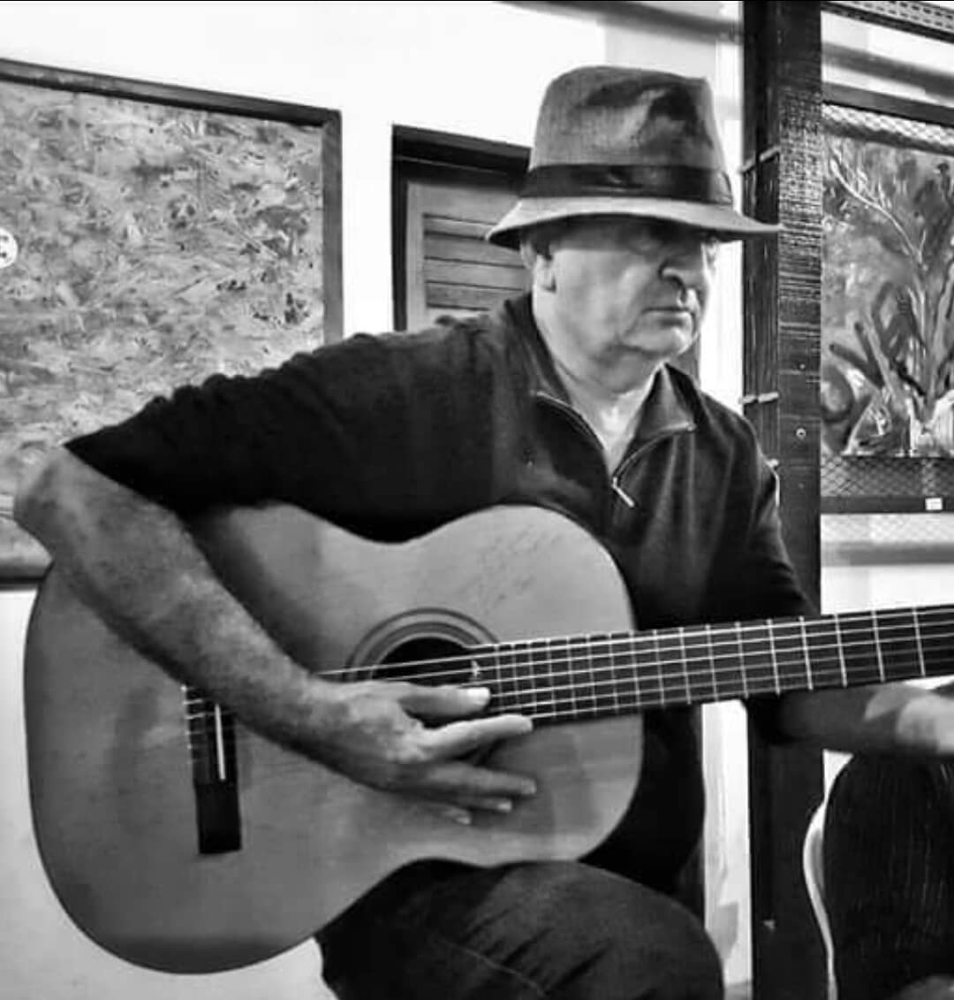

Biografia

Antonio de Assis Souto Lima (nome de nascimento do Toni Bala), nasceu em 1956, na cidade de Tamboril - Ceará, filho de um dono de Hotel e de uma dona de casa, Toni tem mais nove irmãos. Aos treze anos, começou a tocar violão e a participar de peças teatrais na cidade.No início da vida adulta, foi servir no exército na cidade do Rio de Janeiro,
mas a veia artística falou mais alto, ele voltou para Fortaleza, onde em 1987 decidiu se dedicar completamente a música.
Sua carreira teve início no Bar "Qualquer Coisa", onde começou a conhecer pessoas do meio, como o saudoso Luciano Pereira, Tarcisio, Denis Quevedo, Alexandre Accioli, Oswaldete, Carlinha e Inês Aderaldo.
Nos anos seguintes tocou em diversos bares, como o Bar do Oliveira, Bar Tia América, Torino e Dona Xita. O local ele tocou por mais tempo, foi no querido Bar Tocantins, onde a cantoria se iniciava na madrugada e ia até de manhã. Foi lá que ele conheceu
vários clientes animados, que cantavam, e onde a turma se reunia para tomar um delicioso caldo pela manhã. Toni sempre tocou em eventos particulares, em um deles conheceu o Empresário Tonzito Cavalcante que fazia eventos
maravilhosos na Lagoa do Banana, e foi lá que Toni conheceu os violonistas Nonato Luis e Turibio Santos.
Durante os anos, Toni fez várias parcerias com cantores, por quatro anos fez uma bela dupla com a Manu, juntos encantaram as noites da Embaixada da Cachaça e fizeram diversos eventos particulares. Além da parceria com a cantora Manu, Toni e Fafá do Ceará também cantaram e encantaram, e não podia deixar de citar o querido cantor Boca.
Toni tem três filhos : o Emmanoel, Tatiana e Thaiane, três lindos netos e uma esposa amorosa e companheira, a Virgínia Bruno. Atualmente ele toca na Embaixada da Cachaça , e faz parceria com a cantora Cláudia.